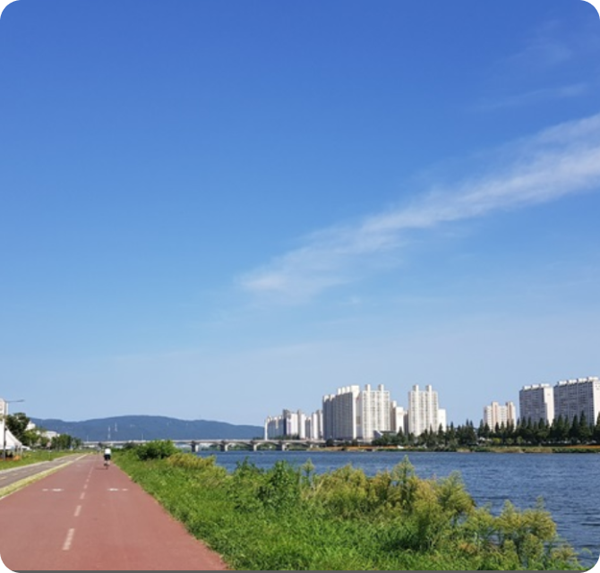
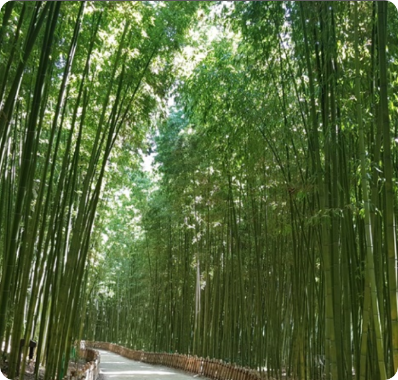

팝업보기
상세정보
해파랑길 1코스
우리나라 둘레길을 소개합니다
 
코스설명
소요시간과 난이도를 확인해주세요
시작점
울산남구
코스길이
17.3km
소요시간
6시간 소요
난이도
쉬움
코스개요
울산 남구에서 중구까지 이어지는 코스
태화강 전망대에서 출발해 십리대숲과 내황교를 지나 염포삼거리에 이르는 구간
강변길을 따라 바다를 만나는 코스로 다채로운 산책길과 대밭 길을 지남
관광정보
물, 대나무, 유채, 청보리를 비롯한 녹음이 어우러진 전국 최대 규모의 도심 친수공간 태화강대공원
태화강과 십리대숲을 관찰할 수 있는 곳으로 야경이 아름다운 십리대밭교
울창한 대나무밭이 태화강을 따라 십 리에 걸쳐 펼쳐지는 '십리대밭'
관광정보
울산시외고속버스터미널 정류장에서 시내버스 754번 이용, 태화강전망대 하차 후 도보이동(약 200m)
코스 인근에 울산의 주요 번화가 성남동 젊음의 거리와 야시장 위치
태화강변은 특히 벚꽃이 흐드러지는 봄철이 장관
태화강 둔치길 곳곳에 식수대가 있으며 도심구간 곳곳에 편의점 위치
스탬프함 위치
울산시 남구 남산로 223 부근(태화강전망대 앞)
팝업닫기